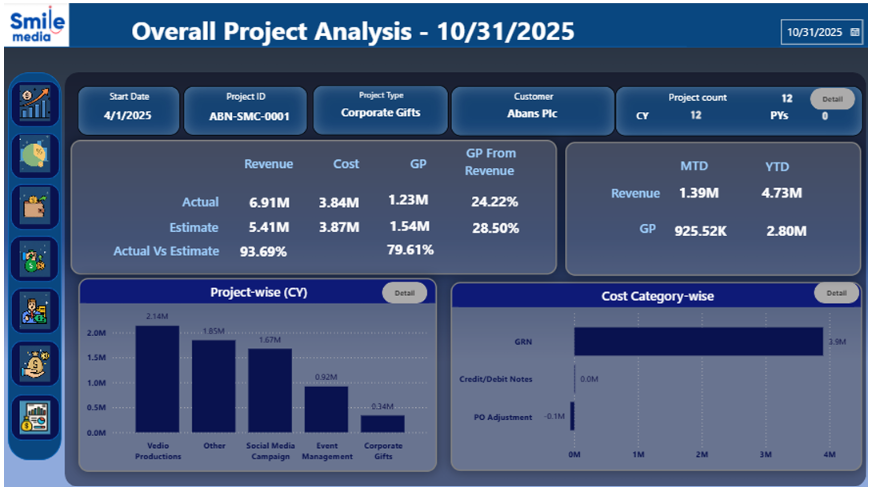
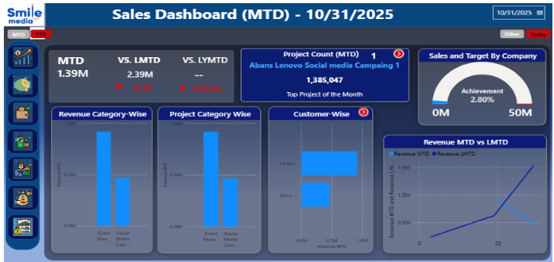
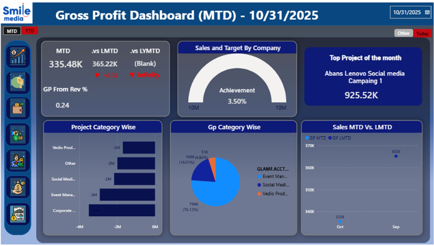
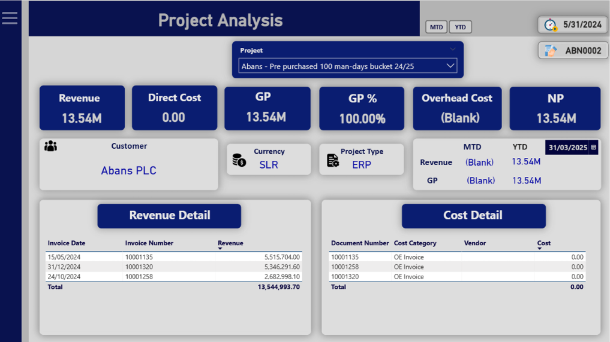
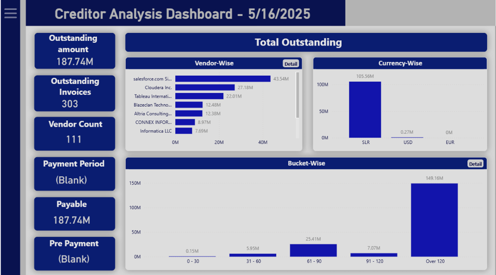

01 / EDUCATION
Monash University
Bachelor of Commerce
Major: Data Analytics
Minors: Finance & Economics
Melbourne, Australia · 2026
I'm Tricia De Rose, a Monash University Bachelor of Commerce graduate with a background in Data Analytics, Finance and Economics.
My experience spans business intelligence, financial analysis, predictive modelling and strategic consulting. I bring together analytical thinking, technical expertise and commercial understanding to uncover meaningful insights, solve complex problems and support informed decision-making.
Driven by curiosity and continuous learning, I'm passionate about applying data and strategic thinking to create value across industries, organisations and emerging business challenges.
.png)
I am a Monash University Bachelor of Commerce graduate with a background spanning data analytics, finance and economics. My professional and academic experiences have shaped my ability to approach business challenges from multiple perspectives, combining quantitative analysis with financial understanding and strategic thinking.
Through my experience in business intelligence, financial reporting and consulting, I have worked with complex information to evaluate organisational performance, identify patterns and communicate insights that support decision-making.
My academic projects have strengthened my capabilities in machine learning, statistical modelling, database development and data visualisation.
Beyond academics and professional experience, representing Sri Lanka internationally as a national swimming team athlete has strengthened my discipline, resilience, leadership and adaptability over 14 years of competitive swimming.
I am motivated by continuous learning, solving meaningful problems and translating complex information into actionable business insights.
Bachelor of Commerce
Major: Data Analytics
Minors: Finance & Economics
Melbourne, Australia · 2026

Former Sri Lanka National Swimming Team athlete with international competitive experience, national records and championship titles.
Competitive swimming has shaped my approach to teamwork, leadership, resilience and performing under pressure.

During my Data Analyst internship at VS Information Systems, I worked with business intelligence and financial reporting dashboards, analysing revenue, profitability, project performance and financial obligations.
Interpreting financial information, evaluating business performance and communicating insights through Power BI reporting.
Analysed financial and operational performance through Power BI reporting, examining sales trends, customer contributions, project profitability and outstanding receivables.
MTD/YTD revenue, customer contributions, revenue categories and targets.
Project revenue, direct costs, gross profit and actual versus estimated results.
Gross profit trends and performance across project categories.
Debtor and creditor balances, invoices and ageing patterns.




Improved visibility into revenue, project profitability and outstanding payments, supporting financial performance monitoring.
Worked with financial dashboards covering revenue performance, profitability, project-level results and creditor obligations.
YTD revenue, historical comparisons, customer contributions and targets.
Gross profit, cost categories and financial trends.
Project revenue, direct costs, gross profit and transactions.
Vendor balances, outstanding invoices and payment ageing.




Consolidated financial reporting to support performance comparisons, profitability assessment and creditor monitoring.
Exploring how machine learning and statistical modelling uncover patterns, assess risks and generate meaningful predictions from complex datasets.
Combining data preprocessing, predictive modelling and quantitative evaluation to compare algorithms and communicate evidence-based findings.
Developed and evaluated machine learning models using the MIMIC-III critical care dataset to predict in-hospital mortality. Prepared clinical data, compared classification algorithms and assessed predictive performance for healthcare risk analysis.
Cleaned clinical data, handled missing values and prepared features for modelling.
Explored Logistic Regression, KNN, Decision Trees, Neural Networks and XGBoost.
Compared classification performance using ROC-AUC to assess predictive discrimination.
XGBoost achieved the highest reported out-of-sample ROC-AUC of 0.9575.
Demonstrated practical skills in predictive modelling, clinical data preprocessing, classification and quantitative evaluation, translating complex results into evidence-based findings.
Applying analytical research, commercial understanding and strategic thinking to address organisational challenges and develop practical, evidence-based recommendations.
Combining business research, risk assessment and strategic frameworks to identify vulnerabilities, evaluate opportunities and recommend practical improvements.
Collaborated on a university consulting engagement examining procurement practices, supplier governance, ESG considerations and modern slavery risks. Applied strategic research and procurement analysis to develop recommendations for stronger supplier oversight.
Assessed supplier expenditure, labour intensity and operational criticality to identify risk exposure.
Examined ethical sourcing, supplier compliance and sustainability through relevant UN SDGs.
Applied SWOT, PESTEL and supplier prioritisation frameworks to evaluate organisational challenges.
Contributed to a proposed three-year Supplier Excellence Program focused on governance and accountability.
Strengthen documentation, supplier onboarding and governance ownership.
Introduce supplier assessments, training and risk-based monitoring.
Develop compliance reviews, performance monitoring and continuous improvement.
Developed a proposed supplier governance framework and phased implementation roadmap to support transparent, accountable and sustainable procurement practices. Strengthened my capabilities in strategic research, risk assessment and stakeholder communication.
My academic work spans statistical research, database development, economic analysis and interactive data visualisation. These projects demonstrate my ability to investigate complex questions and translate quantitative findings into meaningful insights.
Developed an interactive scrolling visualisation exploring bushfire patterns, climate conditions, ignition sources, geographic risk and environmental impacts across Australia.
Transformed complex environmental data into an accessible, interactive visual narrative.
Conducted quantitative research into public attitudes towards proposed social media restrictions for children under 16, examining demographic and behavioural factors.
Applied hypothesis testing and statistical modelling to develop evidence-based findings.
Applied relational database principles and Oracle SQL to organise, query and analyse structured datasets.
Strengthened skills in structured data management, efficient querying and reliable analytical workflows.
Applied economic theory and analytical research to investigate market behaviour, competition, pricing and business decision-making.
Connected economic theory with real-world business challenges and market outcomes.